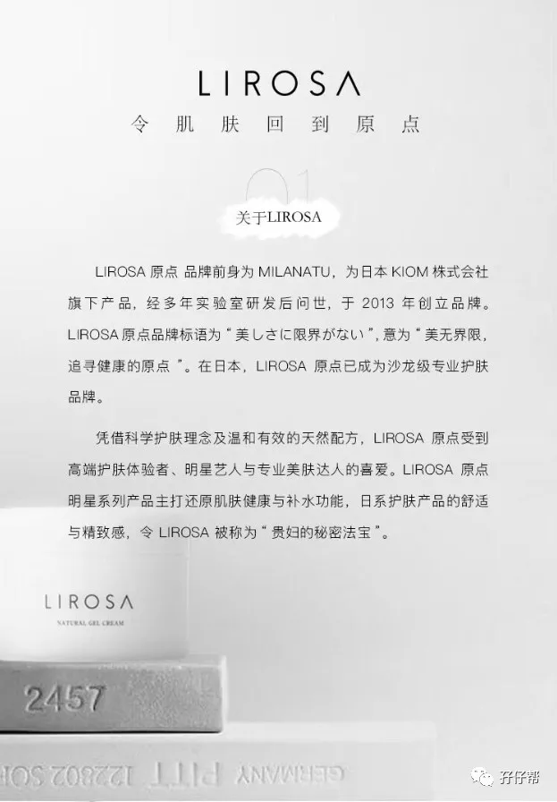
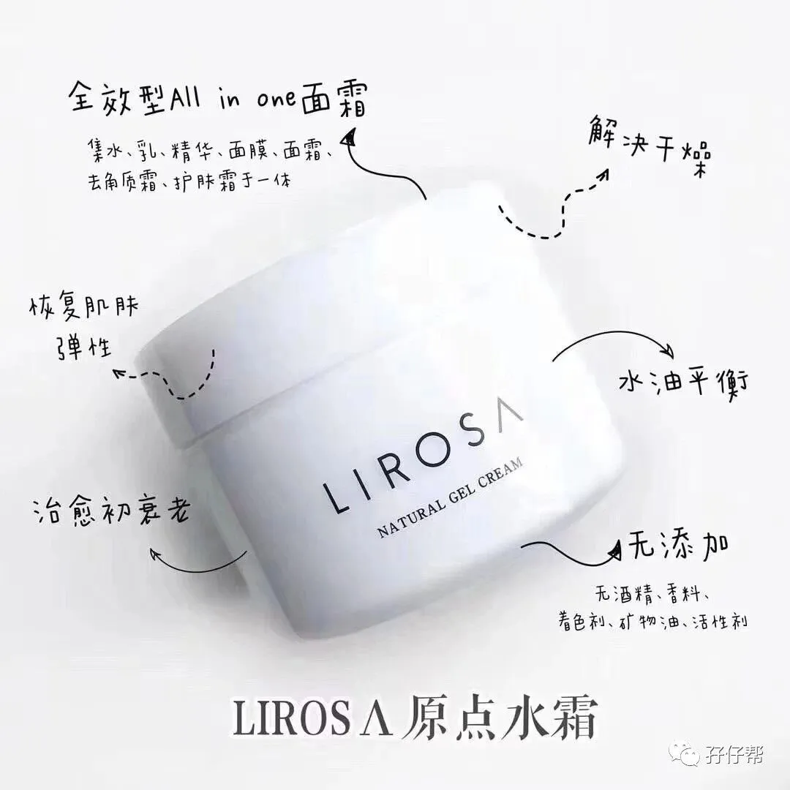
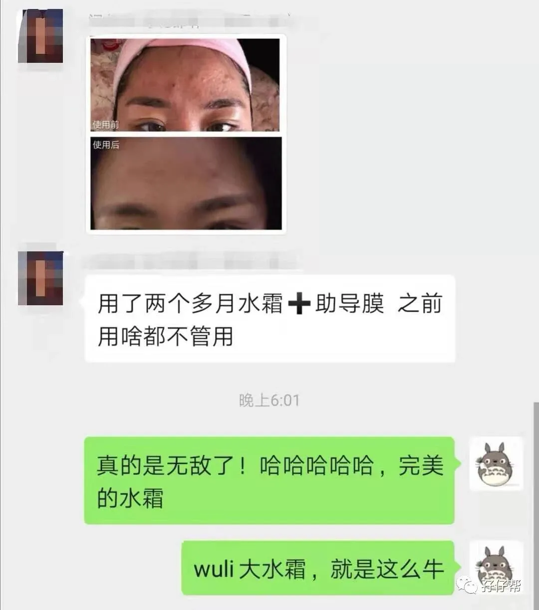
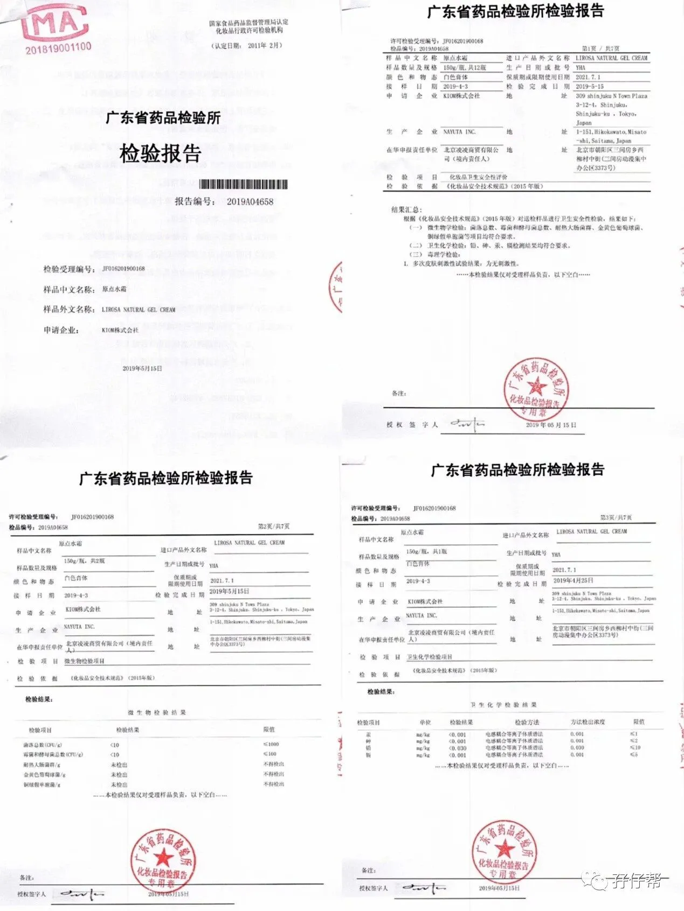
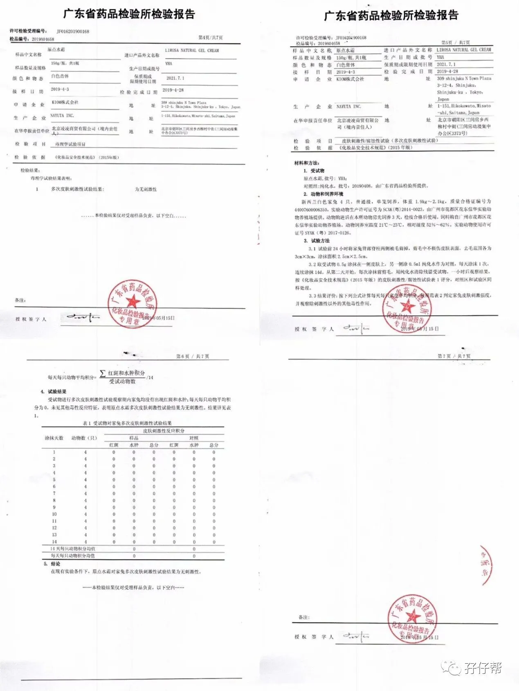
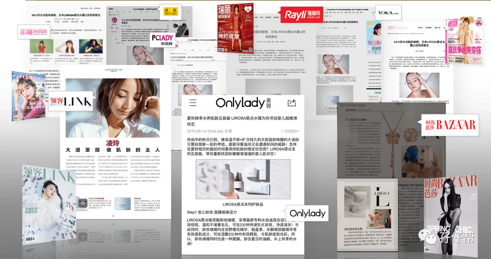
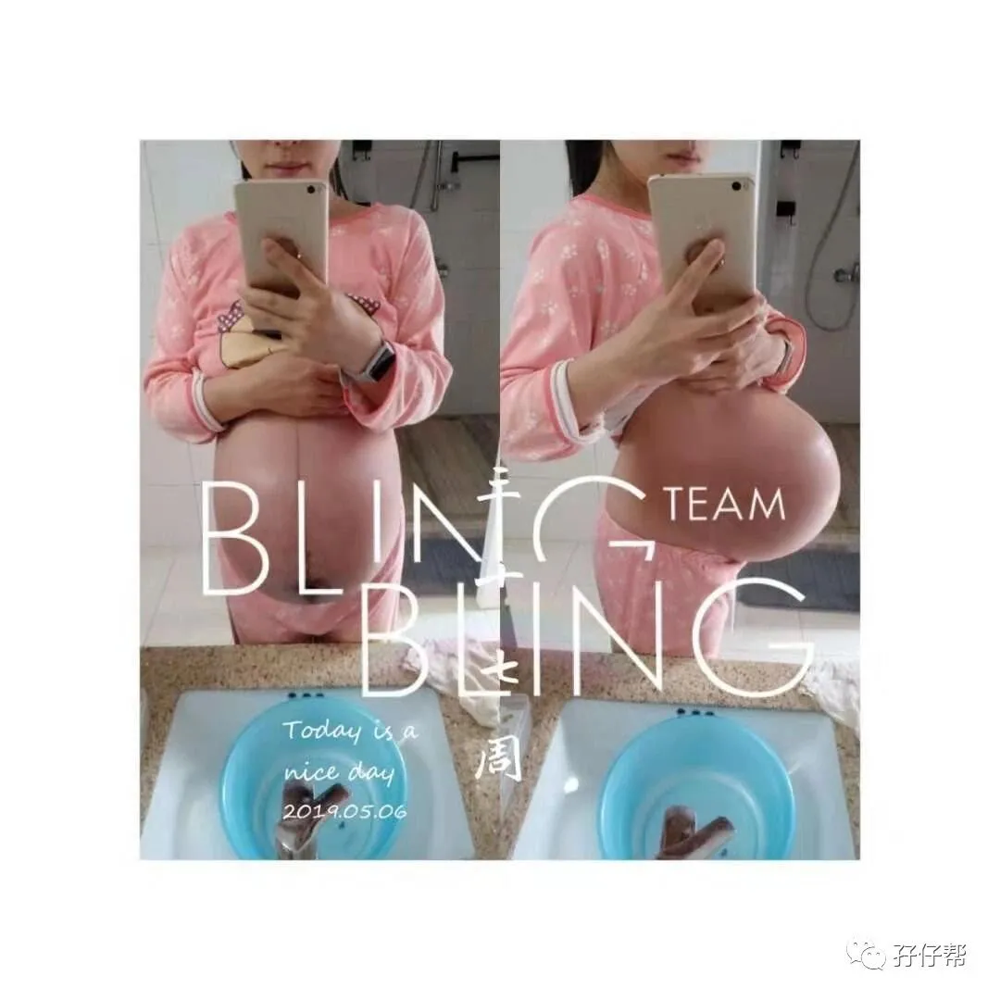
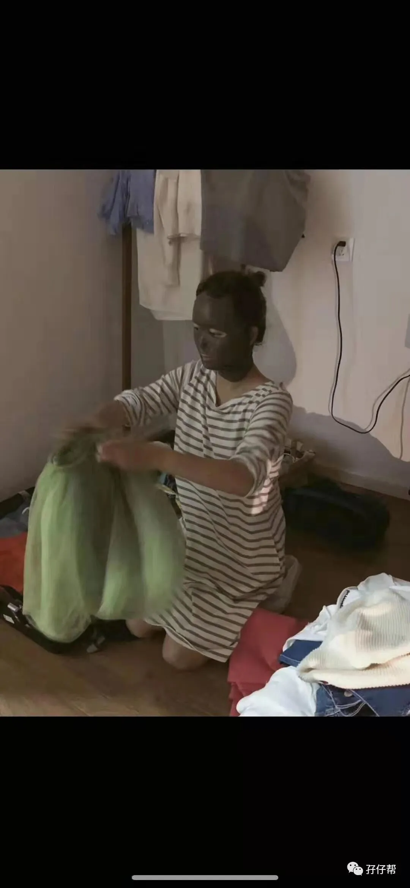
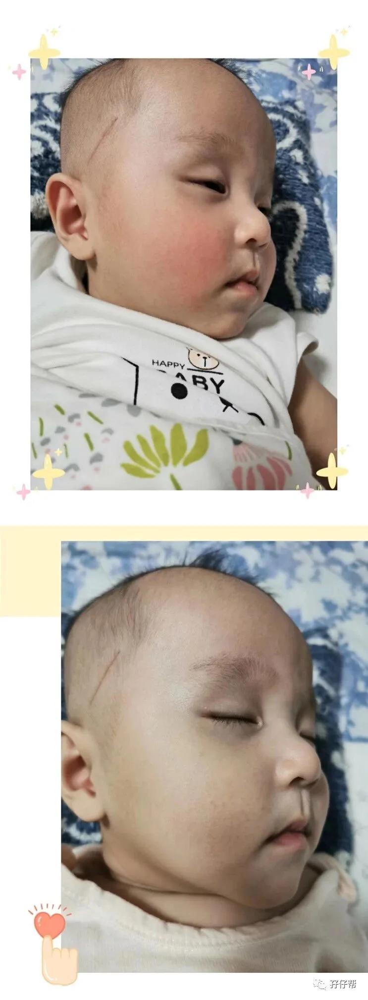

圆圈妈在《你即将被移入双胞胎育儿群》一文中提到，投稿并发布在孖仔帮公众号的文章原创作者可在公众号次条免费投放广告。
这个福利活动长期有效，目的是鼓励宝妈们积极分享自己的双胞胎养育经验，同时也是为了支持那些不得不辞职在家带娃，但又不甘于现状，想要带娃赚钱两不误的女强人双胞胎妈妈。
因此，孖仔帮提供了这样一个平台，给做淘宝微店微商的你，做代购的你，兼职各行各业需要推广渠道的你。
觉得靠谱，觉得有点意思，那就来投稿分享你的双胞胎育儿经历吧！
这一期推广来自双胞胎爆米花&嘎嘣豆妈妈@浅夏微凉，她在上一期的文章中《耗时5天，我的喜剧式双胞胎顺产经历》有非常棒的经验分享。
本期她要推广的是她自用兼代理的护肤品LIROSA，有兴趣购买此品牌护肤品的宝妈们可在文末处获取到双胞胎爆米花&嘎嘣豆妈妈的个人微信号，以下是爆米花&嘎嘣豆妈妈使用LIROSA的测评。
犹记15年，我刚从祖国的大西北回到南方。在西北呆的那两三年从来没有护理过自己的皮肤，不管是保湿还是美白，甚至连最基本的防晒都没有擦。皮肤状态可想而知。
初回南方，潮湿的气候让我的皮肤不是那么适应，原本干皮的我愈发的干燥，稍微擦一点乳液，不仅不吸收，反而全部浮在表层，让整个脸部发粘。
也是在这个时候，我结识了LIROSA，那时他们还叫MILANATU，从他们的王牌水霜开始，这一用，便是4年。
可以说，我看着LIROSA的产品不断的更新和改进，但是从没改变的，是他们做产品的初心。
（图片是我拍的，可以看到第一版和第二版的水霜）
因为自己皮肤的转变，我也开始把LIROSA介绍给周围的小伙伴，看着他们的痘痘肌、敏感肌，在LIROSA的帮助下，改善、修复，我也发自心底的替他们高兴。
转眼到了18年，竟意外的迎来了我的双胎宝宝。每个孕妈都是成分党。我虽然知道孕期激素水平的原因，会导致我们的肌肤更加不稳定，也明白基础的皮肤护理并不会对胎儿产生任何的影响。
但为了保险起见，我依旧去查了LIROSA的成分表，里面纯天然的成分，以及在国务院的备案资料，都让我安心不少，可以快乐的做个美孕妈。
整个孕期，我的肚子亮亮的，没有一丝的妊娠纹,（我不是没纹的体质，一胎让我整个肚子全部花掉，紫红紫红的）因为我除了护理脸部，我的肚子，我也没有放过。同事见到我，都说我的皮肤白里通红，好的不得了。
整个孕期，就在单位这样一天天的过去，产假，也在没日没夜的屎尿屁中度过。孩子出生到现在，我没有睡过完整的觉，孩子在身边，我负责喂奶换尿布泵奶，孩子不在身边，我依然3个小时一次泵奶，不分白天黑夜。
回到职场，同事无一例外的感叹我的皮肤状态如此之好，似乎岁月对我格外宽厚，看不出熬夜衰老的痕迹。
其实我知道，如果没有LIROSA产品的加持，我不会有这么好的肌肤状态。
我可以带着LIROSA的注导膜喂奶，收拾卫生，泵奶的时候我也依旧做着护理，完全没有占用我任何空余时间。
包括我的爆米花和嘎嘣豆小脸被秋风扫皴了，涂上福瑞达为LIROSA特供的四重玻尿酸，24小时，肉眼可见的转好，让我不得不感叹LIROSA系列产品强大的修复功能。
也是在18年底，LIROSA全面开启了代理的销售机制，我毫不犹豫的加入了，因为我见证了这么多小伙伴皮肤的转好，我深信这款产品，也希望推荐给更多的小伙伴。
毕竟，同为母亲的我们本已不易，愿岁月可以善待我们每一个人，也给全职妈妈一些更多的选择。
愿我们都可以家庭事业两手抓，又瘦又美又有钱。
THE
END
【免责声明】本公众号平台对推广文案保持中立，不对所包含内容的准确性、可靠性或完善性提供任何明示或暗示的保证，仅供读者参考，本公众平台将不承担任何责任。
阅读原文








